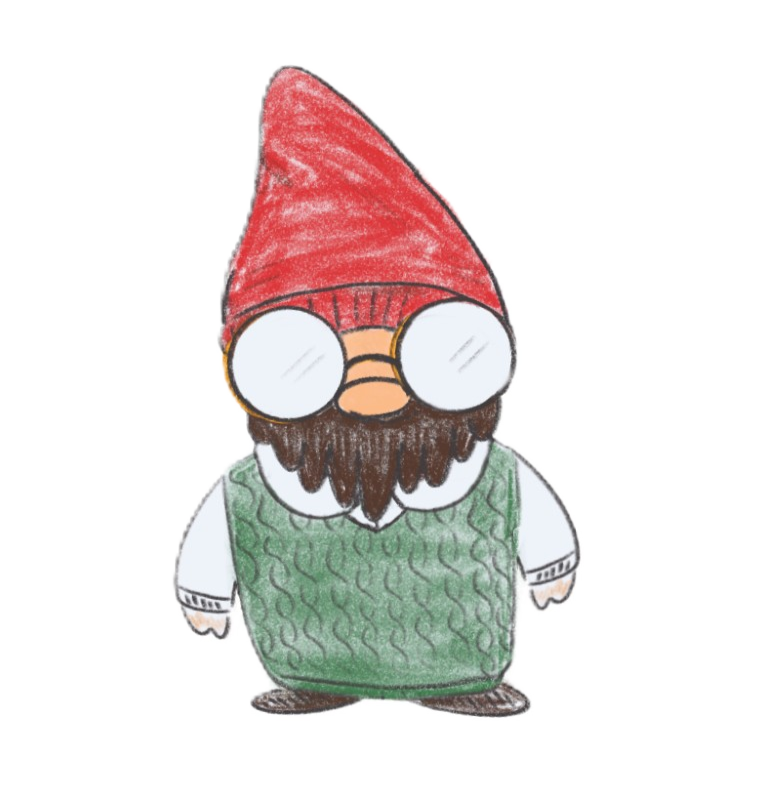

Grant WriterTalk it out with grant
Grant Application Generator
Describe your project like you would to a helpful grant writer. Grant will ask follow-up questions, remember the details, and turn the conversation into a PDF draft when you are ready.
Grant
Grant Writer Online
Missing Required Details
Grant has enough project context to keep going, but these starred fields are still needed before the PDF can be generated.